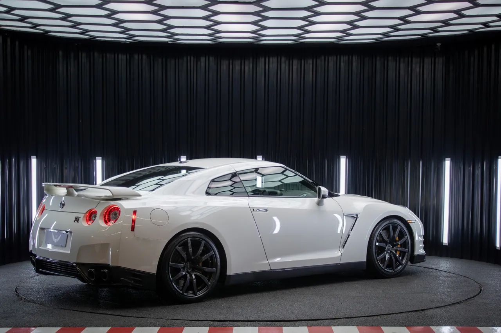

Nissan Gtr-R35
O Nissan GT-R é um modelo de automóvel superesportivo produzida pela Nissan, foi anunciado em 2001 com objetivo de dar sequencia a marca GT-R(que surgiu na década de 1960 que fez sucesso com o Skyline).
O Nissan GT-R é um modelo de automóvel superesportivo produzida pela Nissan, foi anunciado em 2001 com objetivo de dar sequencia a marca GT-R(que surgiu na década de 1960 que fez sucesso com o Skyline).
Velocidade Máxima
Caixa de Velocidade
Aceleração
seu design foi inspirado nos robôs Gundam, o carro é oposto aos concorrentes europeus e americanos, o GT-R tem linhas fortes e robustas sugerindo baixa eficiência aerodinâmica, mas oque acontece é justamente o contrario, com um coeficiente aerodinâmico de 0,26 o design GT-R é pensado e produzido para reduzir arrastos e vórtices ao máximo, além de empurrar o carro para baixo aumentando a aderência e segurança em altas velocidades.